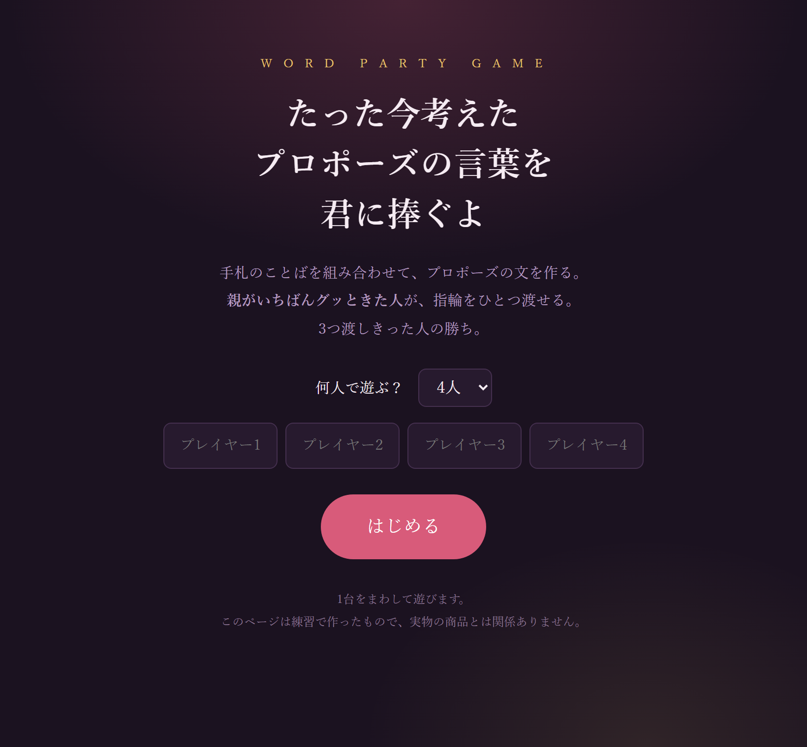
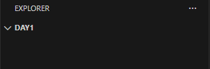
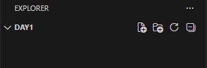
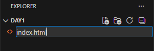
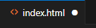
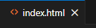

Webサイトの
つくりかた
ぜんぶ自分の手で、1ページずつ。
最後はオリジナルのパーティゲームまで作る。
全9回 ／ 第0回：これから何をするのか・道具をそろえる

1回ずつは短いから。
今日は入れるだけで終わり。
最後に作るのは、これ
『プロポーズの言葉を君に捧ぐよ』
配られたことばを言いまわしに当てはめて、プロポーズの文を作る。 親がいちばんグッときた文を選ぶ——それだけの、 ばかばかしいパーティ用のことば遊び。
- 手札のことばが配られる（配列・ランダム）
- 穴に当てはめて文ができる（文字の置きかえ）
- 全員ぶんを並べて親が選ぶ（DOM操作）
- 指輪を3つ渡したら勝ち（if）


HTML・CSS・JavaScript
HTML ／ 骨組み
「ここは見出し」「ここは画像」と意味を決める。家でいう柱と部屋。
これが無いと何も始まらない。
CSS ／ 見た目
色・大きさ・並び方を決める。家でいう壁紙と家具の配置。
無くても動くが、ダサい。
JavaScript ／ 動き
押したら変わる、計算する、覚える。家でいう電気とスイッチ。
ここで初めて「プログラム」。
順番も、この通り。 骨組みが無いのに壁紙は貼れないし、電気配線もできない。だから HTML → CSS → JS の順で覚えるのが一番ラクなんだ。

C言語をかじった人へ
C を少しでも触ったことがあるなら、その感覚はかなり役に立つ。ちがうのは主に3点だけ。
| C言語 | JavaScript | |
|---|---|---|
| 実行のしかた | コンパイルして .exe を作ってから実行 | 保存してブラウザで開くだけ。ビルド不要 |
| 型の宣言 | int x = 5; と型を書く | let x = 5; 型は書かない（勝手に判断） |
| 画面に出す | printf("hi"); | console.log("hi"); |
| ループ・if | ほぼ同じ。 for (i=0; i<5; i++) も if (a == b) もそのまま通じる | |
| メモリ管理 | 自分で malloc / free | 考えなくていい（自動） |
必要なのは2つだけ。ブラウザとVSCode。
どちらも無料。
VSCode ＝ 高機能なメモ帳
正式名称 Visual Studio Code。Microsoft が配っている無料のテキストエディタ。 メモ帳でもサイトは作れるが、VSCode を使うと——
- タグに色がついて読みやすい
- 打ち間違いに波線で警告が出る
- 途中まで打つと続きを提案してくれる
- フォルダごと開いて管理できる
手順は reference/setup.html に画面つきで載せてある。

左がファイル一覧、右が編集エリア。慣れるとこの2つしか見ない。
最初に入れる拡張機能は2つだけ
左の縦バーの 四角が4つのアイコン（拡張機能）をクリック → 名前で検索 → Install。
① Japanese Language Pack
メニューが日本語になる。検索窓に Japanese と入力。 入れたあと「Restart」を押すと反映。
※ 英語のままが良ければ入れなくても大丈夫。
② Live Server
保存した瞬間にブラウザが自動でリロードされる神拡張。 検索窓に Live Server。
使い方：html ファイルを右クリック → Open with Live Server
ファイルを作って、保存するまで
① フォルダを開く

ファイル → フォルダーを開く
左上にフォルダ名が出れば成功。
中はまだ空っぽ。
② 「新しいファイル」

フォルダ名の行にマウスを乗せると
アイコンが出る。いちばん左が新規ファイル。
③ 名前を打つ

index.html と打って Enter。
.html まで自分で打つのを忘れずに。
④ 書いたら保存（Ctrl + S）
保存できたかはタブの右で見分ける。

● まだ保存していない

× 保存できた
この ● が出ているあいだは、 ブラウザで見てもさっきのまま。
今日のうちに、1回だけ動かす
① これを打ち込む
② Ctrl + S で保存
タブの右にあった ● が消えたら保存できている。
③ ダブルクリックで開く
エクスプローラーで index.html をダブルクリック。ブラウザが開けば成功。

書く → 保存 → 見る
① 書く
VSCode でタグを打つ。
打ちまちがえてもこわれない。
何度でも直せる。
② 保存する
キーボードで。
Ctrl ＋ S
タブの右の ● が消えたら、
保存できた合図。
③ 見る
ブラウザに切り替えて。
F5 （更新）
ブラウザは閉じなくていい。
開いたまま更新するだけ。
AIは使っていい。ただし使い方がある
○ こう使う
- エラー文をそのまま貼って「これ何？」と聞く
- 「こういう機能を足したい。何が必要？」と相談する
- 作った後に「もっと短く書ける？」とレビューさせる
- 大まかな下書きを出させて、自分で読んで直す
× これは伸びない
- 丸投げして、出てきたコードを読まずに貼る
- 動かないとき、理由を見ずに何度も作り直させる
- 何を作りたいか決まってないのに聞く
→ 結局直せないので、一歩も進めなくなる。
今日のチェックリスト
- VSCode をインストールした
- 拡張機能（日本語 / Live Server）を入れた
- デスクトップに web/day1/ フォルダを作った
- index.html を作って、ブラウザで開けた
- HTML・CSS・JavaScript の役割が言える
中身が全部 HTML なのが見える。
プログラム書いてない。